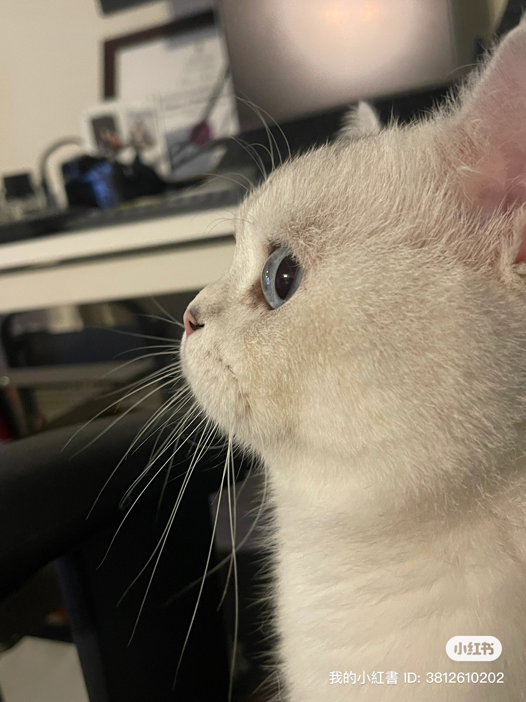

Photography
I enjoy capturing the memorable moments in travel and daily life. Rather than identifying myself as a "photographer," I see myself more as a "recorder" — someone who preserves the beauty that unfolds around us, from fleeting moments on the road to everyday scenes that often go unnoticed.
My Pet
This is my cat Xiaoshan, he is a three-year old British Short Hair. He is been with my family for two years. He loves chicken breast and padding gently! Hates cutting nails! I love Xiaoshan!
